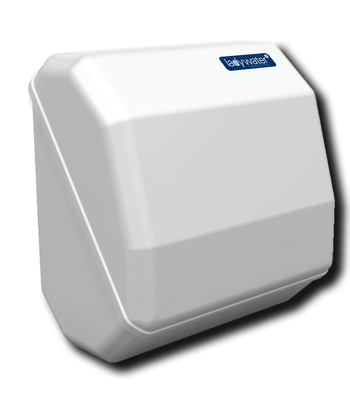

PURIFICADORES DE ÁGUA
Tenha água com a melhor qualidade



Equipamentos simples e práticos.
Eliminam químicos, odores, sabores e tudo o que degradar a qualidade da água.
Poupança no orçamento, evitando garrafões e plástico desnecessário.
Soluções para diversos tipos de água e locais de extração.
Transformamos a água de rede, de poço ou outra fonte em água com a melhor qualidade possível, removendo odores, cor e químicos que estejam na sua composição.
Os nossos técnicos tratam de tudo. Os produtos têm um design moderno e elegante, permitindo ter produtos de higiene perto sem que interfira na qualidade da água, visto que todo o sistema de purificação está protegido.
Com os nossos purificadores de água consegue uma poupança no consumo diário. Aliado a isso, evita comprar garrafões, carregá-los e ajuda no combate ao plástico, salvaguardando o ambiente e o planeta.